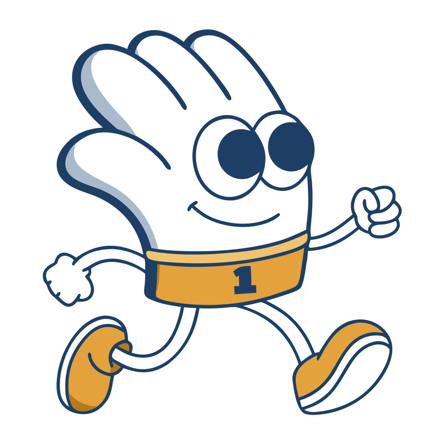
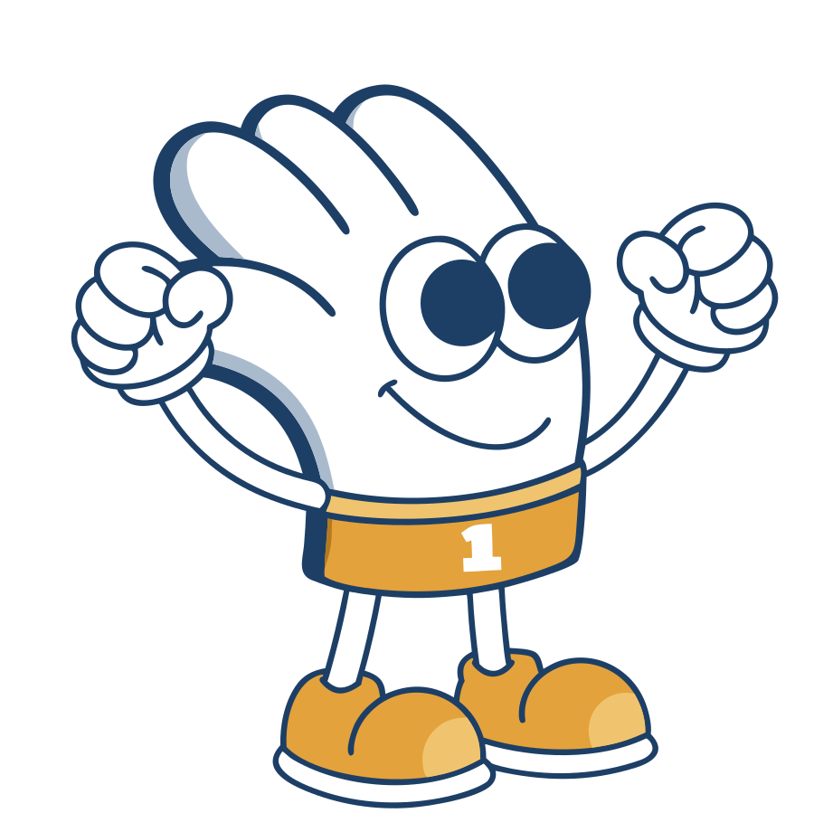

Your device asks for reduced motion, so every hero shows the still pose. Turn it off in your system settings to see the run cycle.
The landing sequence
He waits beside the tagline, bouncing. On the real page, scrolling far enough starts the run; here the button does. He crouches, pops out of a dust puff already running, speeds up to a sprint, and the wipe follows his back into the next section.
Being online
≠
Being found
Let's give your business a handstart.
Original and rig
Recraft's running drawing recolored to Golden hour, the rig in the drawing's own pose (rebuilt limbs, separate eyes), and the rig running with the default settings.

Original, Recraft A, recolored
Rig, still pose
Rig, running, defaults
Idle
The victory pose, waiting beside the tagline before the run. A gentle bounce, fist pumps and blinks.

Original, Recraft idle, recolored
Rig, still
Rig, bouncing, 1.3s
Excited, 0.8s
On the sky
One stride, frame by frame
The default cycle frozen at eight points, left to right. Frame 1 is the near foot landing.
Speed
Seconds per full stride (two steps).
Jog, 1.0s
Run, 0.75s
Sprint, 0.5s
Stride and kick
How far the feet travel and how high the back foot kicks.
Short, stride 110, kick 80
Medium, stride 150, kick 120
Long, stride 190, kick 160
Limb thickness
White core of legs and arms; the outline stays the same.
Thin, 18 / 13
As drawn, 25 / 18
Chunky, 34 / 25
Bounce and lean
How much the body drops on each step, and how far it leans into the run.
Calm, bob 6, lean 3
Springy, bob 14, lean 6
Bouncy, bob 26, lean 11
On the sky
Where the hero will live, after the portal dive.
Still
Running, defaults
Sprinting
Playground
Tune every setting and copy the result back to me.